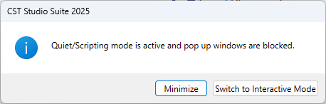
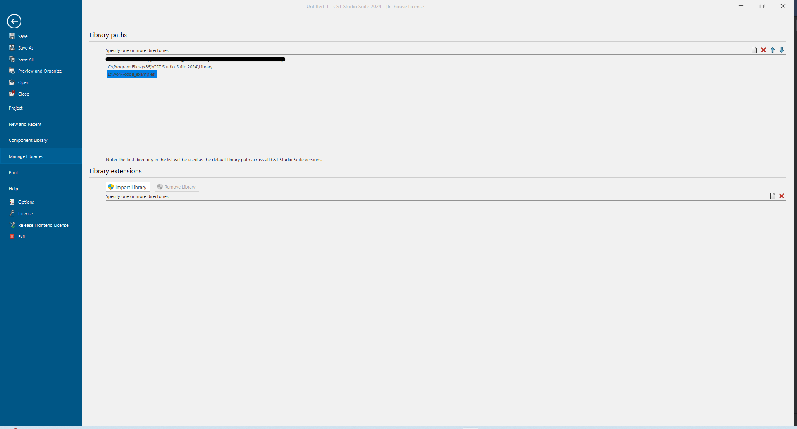
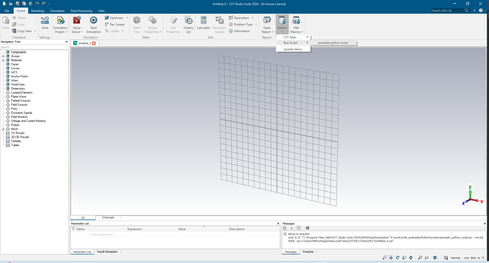

Getting Started¶
Within this tutorial, we will be using the Python interpreter that comes bundled with the CST installation. Various packages like numpy and scipy are pre-installed. You can open an Python shell (using IPython) by starting:
Windows: “<CST_STUDIO_SUITE_FOLDER>\AMD64\python\ipython”
Linux: “<CST_STUDIO_SUITE_FOLDER>/LinuxAMD64/python/ipython”
where <CST_STUDIO_SUITE_FOLDER> should be replaced with the path to the CST Studio Suite installation on your system.
Now, the code snippets shown in this tutorial can be copied and executed in that python shell.
On Windows, mouse right-click pastes clipboard content into the shell, whereas
on Linux, “right-click->Paste” should do the job.
Alternatively, the IPython %paste magic command pastes the clipboard content.
Testing your environment¶
Now, please try to run the following code:
import cst
print(cst.__file__) # should print '<PATH_TO_CST_AMD64>\python_cst_libraries\cst\__init__.py'
Creating a Project¶
We start by opening CST and creating a project.
Here, and in all subsequent chapters, some preparation code needs to be executed first:
import cst.interface
from pathlib import Path
import tempfile
project_dir = Path(tempfile.mkdtemp())
print(f"Working in temporary directory: {project_dir}")
Now, the following code cells can be run independently. For creating a new CST Microwave Studio project, run
# connect to a running DesignEnvironment or start a new one
de = cst.interface.DesignEnvironment.connect_to_any_or_new()
# start a new mws project
prj = de.new_mws()
# save the project
prj.save(project_dir / "new_project.cst", allow_overwrite=True)
As shown in the example code above, to create a Project you need to first import the cst.interface package and then
create and start a DesignEnvironment using cst.interface.DesignEnvironment.connect_to_any_or_new().
Using cst.interface.DesignEnvironment.new(), it is also possible to start a new DesignEnvironment and not give the
option to connect to an existing DesignEnvironment.
Both variants return an instance of DesignEnvironment.
A pop-up window will let you know that Quiet/Scripting mode is active.

This means that any input directly into the Environment window will be ignored. To switch to interactive mode, use the button in the pop-up window.
Now that an environment is running, a project can be created. Depending on what type of project you need, use one of the commands from the table below on the previously created DesignEnvironment.
Command |
Project Type |
|---|---|
|
CST Cable Studio project |
|
CST Design Studio project |
|
CST EM Studio project |
|
Filter Designer 3D project |
|
CST Mphysics Studio project |
|
CST Microwave Studio project |
|
CST PCB Studio project |
|
CST Particle Studio project |
Save Project¶
To save the project after working on it, you need to run save() on your project instance. This will save your project
to the path it was saved before or open a “Save As” window, if it has not been saved before. You can also specify the
path directly as a string when calling the method.
prj.save("<Path_to_desired_Folder>\project_name.cst")
If the desired path already exists, and you want to overwrite this file, you need to set allow_overwrite to True.
prj.save("<Path_to_desired_Folder>\project_name.cst", allow_overwrite=True)
Load an existing Project¶
# connect to a running DesignEnvironment or start a new one
de = cst.interface.DesignEnvironment.connect_to_any_or_new()
# open the project
prj = de.open_project(project_dir / "new_project.cst")
# work with your project
...
# save the project
prj.save()
As shown in the example code above, an existing Project can be loaded by using open_project("<file_path>") on the
DesignEnvironment instance.
Run Scripts from CST Studio Suite¶
CST Studio Suite offers the option to run created scripts on the current DesignEnvironment. For this, the desired python script has to be saved in one of the “CST library directories” in the subdirectory “/Python/scripts/”. The CST library directories can be found in “File: Manage libraries”. Either you can create a new Library path or use one of the already created directories. Here, we will use the newly created “E:/work/code_examples” path which is highlighted in the image below.

import time
from cst.interface import get_current_project
prj = get_current_project()
de = prj.design_environment
with de.quiet_mode_enabled():
# Enable Quiet/Scripting mode, while script is running
print(prj.filename())
time.sleep(5)
The created script, which is seen above, determines the currently active project and prints its filename.
While the filename is being printed the quiet_mode is enabled using quiet_mode_enabled() on the DesignEnvironment
variable.
The script has to be located in “/Python/scripts/” under the previously added directory to be recognised by the CST
Studio Suite.
For the path added above, this would be “E:\work\code_examples\Python\scripts”.
New scripts only appear in the menu after updating the Python menu. To do so, press “Update Menu” under “Home: Macros -> Python”.
Now we can see the new “example python script” in the Python menu as seen below.

Running it will start a console window that shows us the filename of the current Project.
The scripts will be executed using the integrated python interpreter!